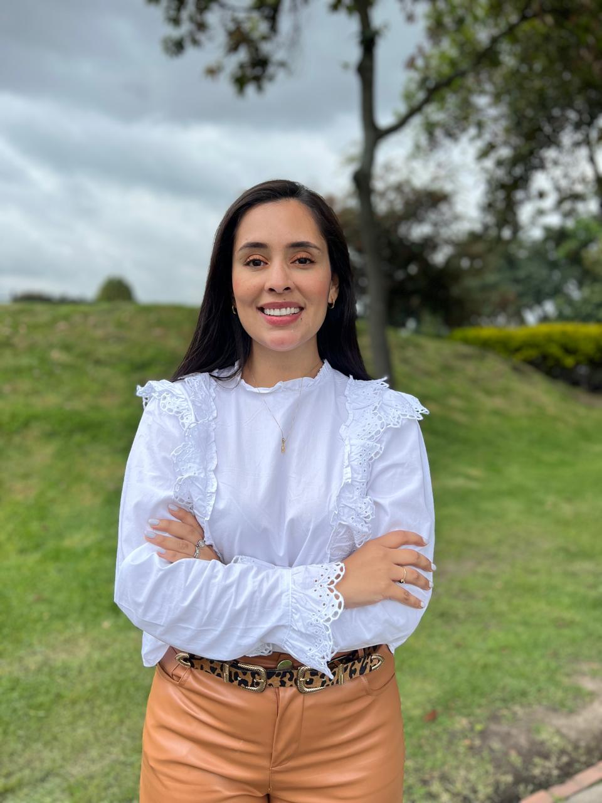

Johana Rojas Montoya

Teología del hogar
Explora la importancia del hogar como espacio de desarrollo espiritual y emocional.

Integrando generaciones para construir entornos seguros
22 de noviembre - Medellín / Col
Compra tus boletas aquíExplora la importancia del hogar como espacio de desarrollo espiritual y emocional.
Reflexión sobre vínculos intergeneracionales en entornos educativos y familiares.
La importancia del afecto en el desarrollo cognitivo y emocional infantil.
Perspectiva sobre el acompañamiento y respeto mutuo en la crianza.

Registro
Apertura
La teología del hogar
Johana Rojas Montoya
Preguntas
Refrigerio
La relación adulto - niño en un mundo cambiante
Dr. Juan Fernando Gómez Ramírez
Preguntas
La infancia en contextos digitales
Dra. Andrea López
Preguntas
Refrigerio
El juego como vínculo social
María Fernanda Pérez
Cierre del Congreso